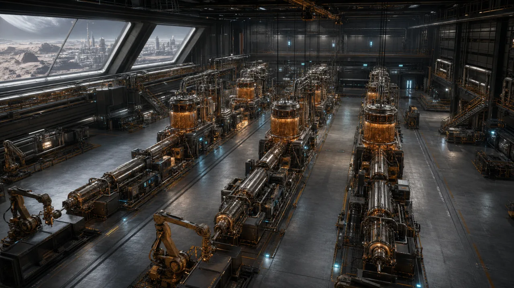
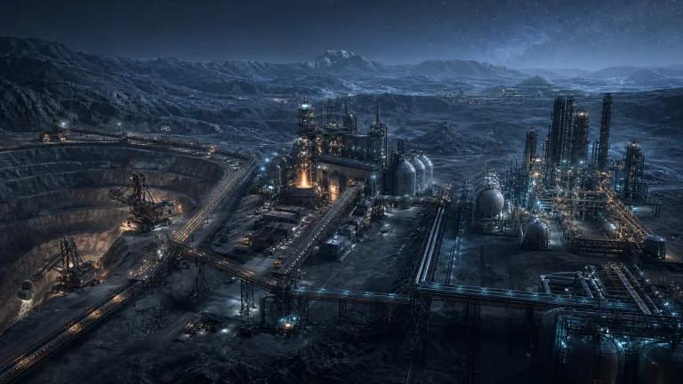
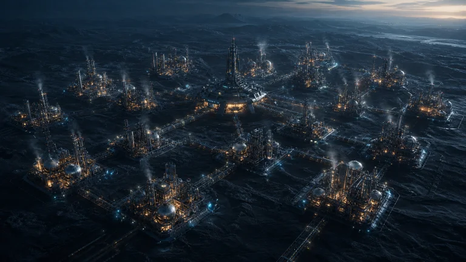
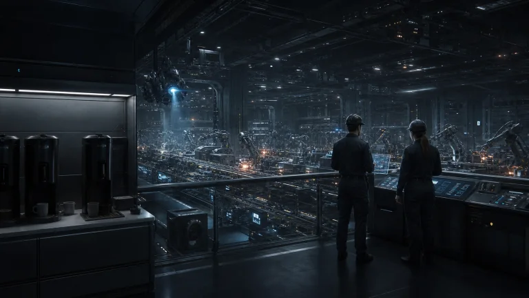
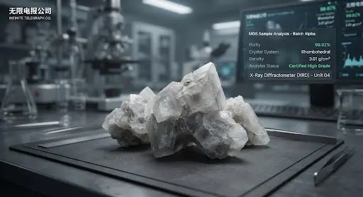
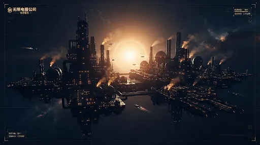

2026.07.26 / Polymer Production
4 个聚合物生产厂正式落地，EPO 产线启用
第四条产线，不是补充，是结构升级。
无限电报集团今日完成 4 个聚合物生产厂的落地，正式启动 EPO 环氧树脂生产。至此，集团产业结构由矿场、基础材料、化工进一步延伸至聚合物制造，形成 4 个矿场、6 个基础材料厂、17 个化工厂与 4 个聚合物生产厂协同运行的四条产线。
查看聚合物产线 →Company Transmission / 2026
这里记录产线、融资与产业布局的实际变化。空洞宣言不占版面。

2026.07.26 / Polymer Production
第四条产线，不是补充，是结构升级。
无限电报集团今日完成 4 个聚合物生产厂的落地，正式启动 EPO 环氧树脂生产。至此，集团产业结构由矿场、基础材料、化工进一步延伸至聚合物制造，形成 4 个矿场、6 个基础材料厂、17 个化工厂与 4 个聚合物生产厂协同运行的四条产线。
查看聚合物产线 →2026.07.26 / Group Member
从投资人，到共同建设者。
加拉迪恩 Galadene 正式加入无限电报集团。作为集团早期个人投资人，他长期经营跨星球资源生产与贸易网络，在铝矿、水务、盐类、工业气体及多类矿液市场拥有深厚经验，并持续参与多个商业组织与产业项目。此次加入，将把成熟经营者的市场判断、供应网络与合作经验带入集团，为资源协同和长期扩张提供新的支点。
了解 Galadene →

2026.07.22 / Industrial System
矿场、基础材料与化工厂三条产业线已进入同步推进阶段。资源开采、材料处理与化工生产开始形成连续链路，公司产业结构由单点能力迈向完整系统。
查看产业流程 →2026.07.20 / Group Formation
集团化运营架构正式建立，17 个化工厂已进入投产准备阶段。统一排产、统一调度与统一交付将成为化工板块扩张的基础秩序。
查看化工业务 →

2026.07.17 / Cost & Efficiency
降本，不降理想；增效，不增工资。
咖啡暂停补充，排产持续增加，幸福指数继续上调。个别感受差异，不影响公司整体向好趋势。
2026.07.17 / Industrial Layout
公司已启动新工业园区的选址工作。评估将围绕资源可达性、运输链路、产线协同与长期扩展空间展开，目标是为下一阶段垂直一体化布局建立稳定承载点。
查看产业流程 →2026.07.16 / Capital
本轮融资为公司持续完善工业链提供新的推进力。个人投资人加拉迪恩 Galadene 以 400 万 CIS 参与投资，用明确行动认可了公司的长期工业路线。
进入投资者关系 →2026.07.15 / Automation
MGS 板块完成自动化升级，进一步减少重复操作与流程波动。升级围绕供给的连续性与可预测性展开，炫目的单点指标不在目标清单里。
查看 MGS 业务 →

2026.07.14 / Refining
SF 炼化板块月度产值超过阶段性预期，验证了连续生产与流程协同的价值。公司将继续把稳定交付放在扩张速度之前。
查看当前产业结构 →